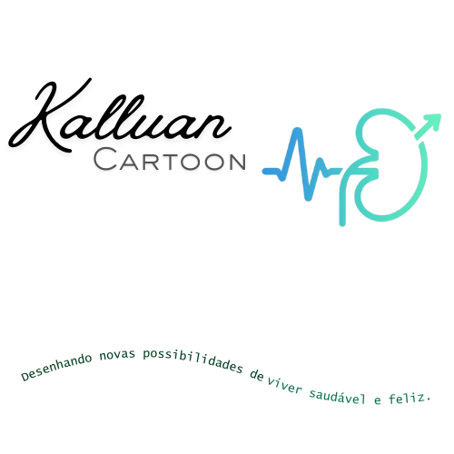
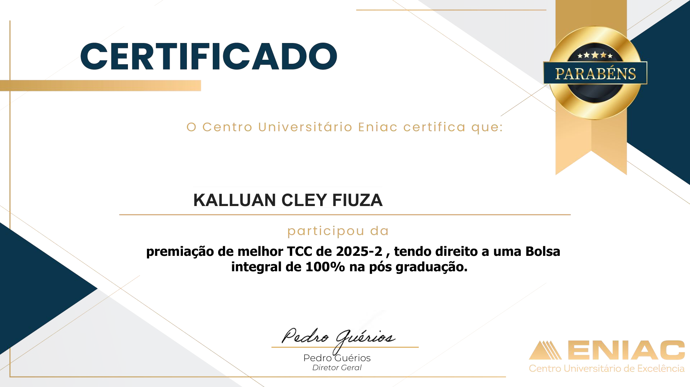
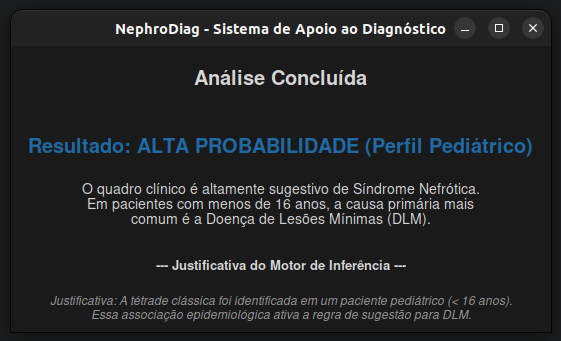

Transformando a saúde através da tecnologia. Especialista em Sistemas Desktop, Python e inovação hospitalar.
Minha paixão pela tecnologia na saúde nasceu de uma experiência pessoal. Após enfrentar a Síndrome Nefrótica, decidi usar a programação para facilitar o diagnóstico de doenças complexas.
Fundador da Kalluan Cartoon e Pesquisador em Machine Learning. Foco no desenvolvimento de tecnologias proprietárias para o SUS, com validação acadêmica e registro governamental.
Melhor TCC de SI 2025
Futuro Projeto SaaS

Centro Universitário Eniac (2026)
Bolsa de Pós-Graduação concedida por excelência técnica e impacto social no desenvolvimento do projeto Nephrodiag.
1º Lugar • 2025
Projeto: Nephrodiag (IA Aplicada à Nefrologia). Reconhecimento máximo da banca acadêmica.
Tecnologias Proprietárias & Pesquisa Aplicada
Sistema especialista para Windows/Linux. Utiliza a biblioteca Experta para fornecer diagnósticos baseados em regras ("Caixa Branca").

Biblioteca Python criada por mim para construção de Sistemas Especialistas e Motores de Inferência.
Evolução do NephroDiag para a Nuvem. Foco em leitura automática de exames (OCR).
Jogo educativo em Construct para ensinar crianças sobre alimentação saudável.
Jogar"Desenhando novas possibilidades de viver saudável e feliz."
O nome Kalluan Cartoon nasce da união entre a identidade do criador e o propósito da criação. Acreditamos que programar é a forma moderna de desenhar realidades. Não escrevemos apenas linhas de código; desenhamos ferramentas inovadoras que permitem a médicos e pacientes visualizarem um futuro com mais saúde, precisão e bem-estar.
Transformar diagnósticos complexos em soluções acessíveis e humanas, unindo a precisão da ciência à clareza do design.
Ser referência em HealthTech no desenvolvimento de Sistemas Especialistas, onde a tecnologia antecipa diagnósticos e garante qualidade de vida.
A tecnologia serve às pessoas. O foco é sempre o paciente.
Criatividade para resolver problemas antigos da medicina.
Rigor científico, dados validados e proteção intelectual (INPI).
Sistemas que promovem saúde e felicidade.